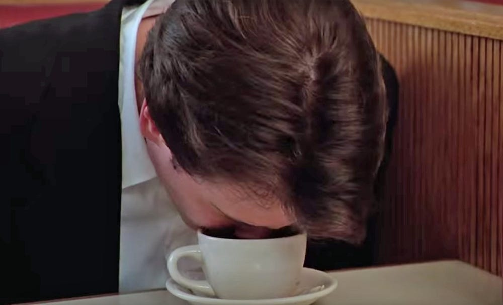

Coffee

America's Second Favorite Pastime
Caffiene addiction isn't a joke, but Starbucks coffee is.
here at TOP we'll teach you how to save money and make a darn good cup of coffee.
Coffee Ingredients
- Coffee grounds or similar(dirt,chocolate cake, etc.)
- Beer or beer substitute
- Lawyer or video camera
Cup Ingredients
Directions
- Brief lawyer or camera on the dangers of coffee
- Bring beer or substitute to 213 degrees Fahrenheit (F)
- Pour coffee grounds or substitute into boiling liquid
- Let simmer for 3-4.5 hours for maximum absorbtion
- Bring coffee down to 33 degrees (F)
- Dip cup in the pot, try to avoid drinking directly from the pot
- Enjoy